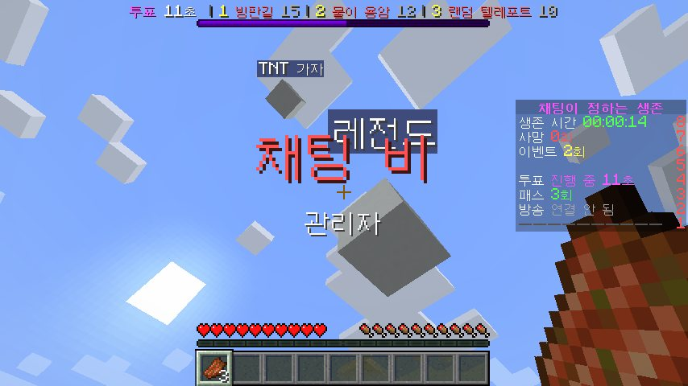
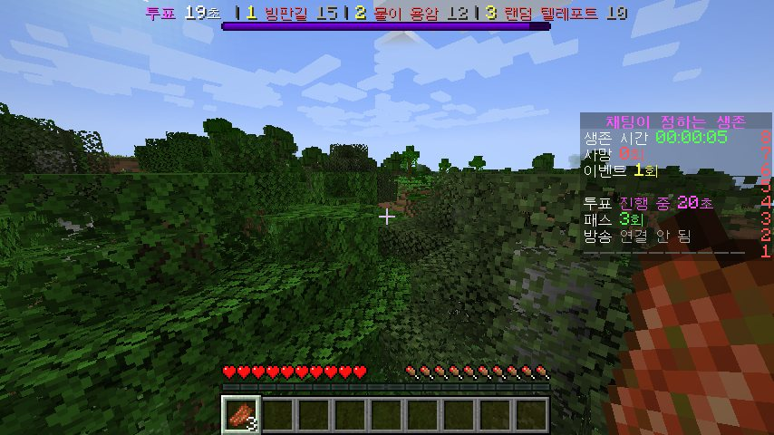
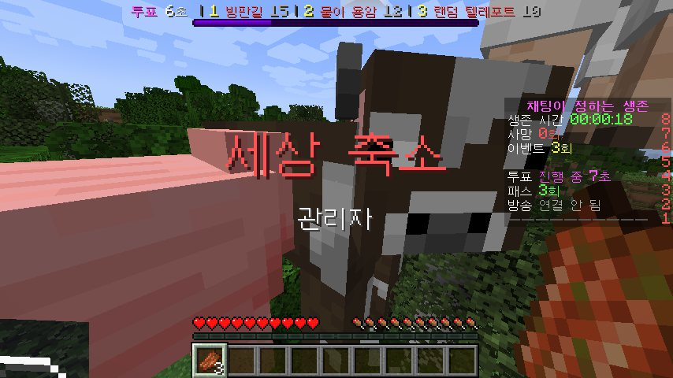
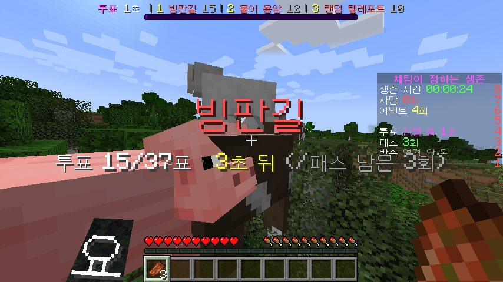
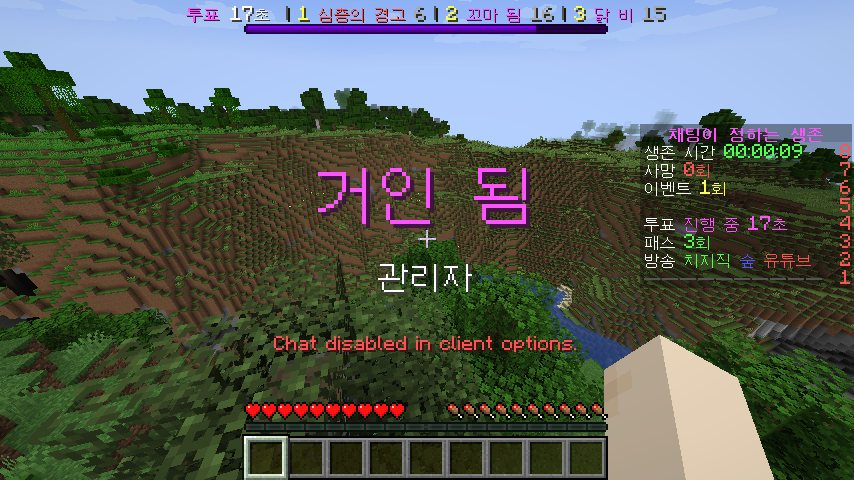
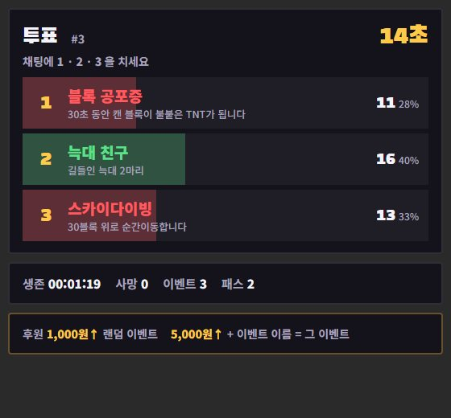
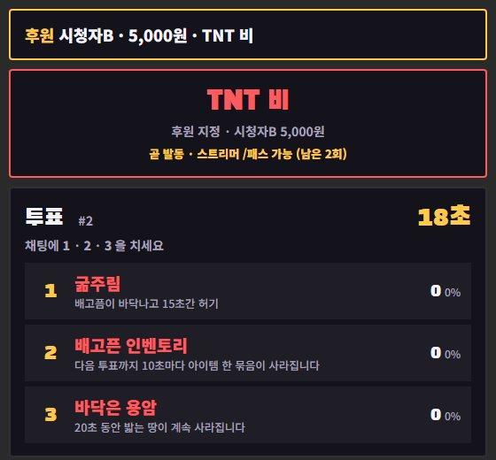

마인크래프트
컨텐츠 서버 제작팀
라베 스튜디오는 방송용 마인크래프트 서버를 만듭니다. 기획부터 플러그인, 전용 클라이언트 모드, 방송 당일 운영까지 한 사람이 끝까지 맡습니다.
제작 문의하기작품
채팅이 정하는 생존
시청자 채팅 투표와 후원이 스트리머의 생존을 흔드는 방송용 컨텐츠
- 치지직 · 숲 · 유튜브
- 모드 설치 없음
- OBS 오버레이

- 이벤트
- 60종
- 투표 주기
- 45초 · 20초 투표
- 후원
- 금액별 즉시 발동
- 동작 확인
- 1.21.4 · 26.3
어떻게 노나
- 시청자가 채팅에 1 · 2 · 3을 쳐서 다음 이벤트를 고릅니다
- 후원 1,000원 이상은 랜덤 이벤트, 5,000원 이상은 메시지에 쓴 이벤트가 바로 터집니다
- 스트리머는 패스권으로 방금 뜬 이벤트를 막을 수 있습니다
시청자가 직접 개입하는 이벤트
- 채팅 조종권 — 채팅 "앞 · 뒤 · 점프"대로 스트리머가 움직임
- 시청자 몹 — 최근 채팅 친 시청자 닉네임의 좀비가 쫓아옴
- 거울 세계 · 금지어 · 가짜 죽음 · 세상 축소 등






만드는 것
컨텐츠 서버
합방과 방송에 맞춘 규칙과 시스템을 플러그인으로 구현합니다.
- 진영전 · 서바이벌 · 미니게임
- 직업, 스킬, 경제, 강화 시스템
- 공성전, 보스 레이드 같은 이벤트
전용 클라이언트 모드
플러그인만으로는 바꿀 수 없는 화면과 조작까지 만듭니다.
- 커스텀 인벤토리와 HUD
- 전용 키 입력과 스킬 조작
- 장비, 가방 같은 캐릭터 모델
방송 운영 지원
방송 당일 서버 상태를 지켜보고 문제를 바로 처리합니다.
- 테스트 서버 사전 리허설
- 실시간 밸런스 조정
- 운영자 호출 대응
진행 방식
기획 상담
방송 컨셉, 인원, 일정을 듣고 어떤 판이 재밌을지 같이 정합니다.
시스템 설계
규칙과 수치를 문서로 정리해 만들기 전에 확인받습니다.
제작 · 테스트
테스트 서버를 열어 직접 접속해 보면서 고쳐 나갑니다.
방송 당일
서버를 띄우고 방송이 끝날 때까지 함께 대기합니다.
1인 팀이라서
기획을 들은 사람이 직접 만듭니다. 중간에 말이 바뀌지 않습니다.
회의 없이 바로 고칩니다. 방송 중 요청도 그 자리에서 반영합니다.
만든 사람이 운영까지 맡아서, 문제가 생기면 원인을 바로 압니다.
규모와 기간
| 규모 | 이런 컨텐츠 | 제작 기간 | 가격 |
|---|---|---|---|
| 소형 | 미니게임 1종 (술래잡기, 생존 미션, 퀴즈) | 약 1~2주 | 견적 문의 |
| 중형 | 규칙 여러 개 + 커스텀 아이템 · GUI · 점수판 | 약 2~4주 | 견적 문의 |
| 대형 | 진영전 · RPG 시스템 + 전용 클라이언트 모드 | 약 4~8주 | 견적 문의 |
기간은 기획이 확정된 날부터 셉니다. 방송 날짜가 정해져 있으면 먼저 알려주세요. 일정에 맞춰 범위를 조정해 드립니다.
지원 범위
- 게임 버전
- 마인크래프트 자바 에디션. 버전은 협의
- 접속 방식
- 바닐라 클라이언트로 바로 접속. 전용 모드를 설치하면 커스텀 화면과 기능이 추가됩니다.
- 동시 접속
- 컨텐츠에 맞춰 설계. 합방 기준 약 50명까지
- 방송 연동
- 치지직 · 숲 · 유튜브 채팅과 후원(별풍선 · 슈퍼챗 포함) 연동. 그 외 플랫폼은 협의
- 서버
- 테스트 서버 제공. 방송용 서버는 호스팅 선택과 세팅을 도와드립니다.
작업 원칙
완성 전부터 직접 접속해서 진행 상황을 확인할 수 있습니다.
방송 전에 참여자들과 한 번 돌려 보고 문제를 미리 잡습니다.
납품 후 1주 동안 버그 수정과 수치 조정은 무료입니다.
자주 묻는 질문
모드를 꼭 설치해야 하나요?
아니요. 기본은 바닐라 클라이언트로 접속해서 플레이할 수 있게 만듭니다. 커스텀 인벤토리나 HUD처럼 화면을 바꾸는 기능이 필요할 때만 전용 모드를 같이 드립니다.
서버 호스팅도 해주나요?
제작 기간에는 테스트 서버를 제공합니다. 방송용 서버는 인원과 컨텐츠에 맞는 호스팅을 추천하고, 설치와 세팅까지 도와드립니다.
방송이 끝나면 서버 파일을 받을 수 있나요?
네. 완성된 플러그인과 설정 파일을 드립니다. 소스 코드 제공과 다른 방송에서 다시 쓰는 범위는 계약할 때 정합니다.
수정은 몇 번까지 되나요?
제작 중에는 테스트 서버를 보면서 횟수 제한 없이 피드백을 반영합니다. 납품 후에는 1주 동안 버그 수정과 수치 조정이 무료이고, 새 기능 추가는 따로 견적을 드립니다.
몇 명까지 같이 할 수 있나요?
컨텐츠에 따라 다릅니다. 합방 기준 약 50명까지 맞춰 설계하고, 더 큰 규모는 서버 사양과 함께 상담합니다.
제작 문의
아래 내용을 함께 보내주시면 상담이 빠릅니다.
- 방송 날짜 (또는 희망 시기)
- 참여 인원
- 원하는 장르나 컨셉 (진영전, 서바이벌, 미니게임 등)
- 참고하고 싶은 컨텐츠나 영상
- 예산 범위